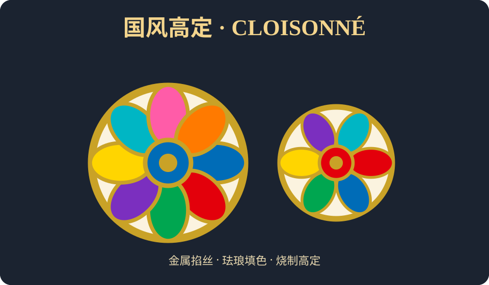
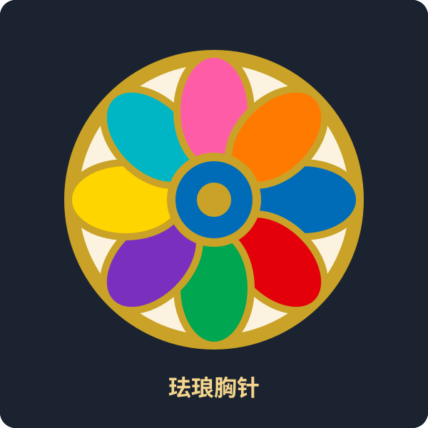
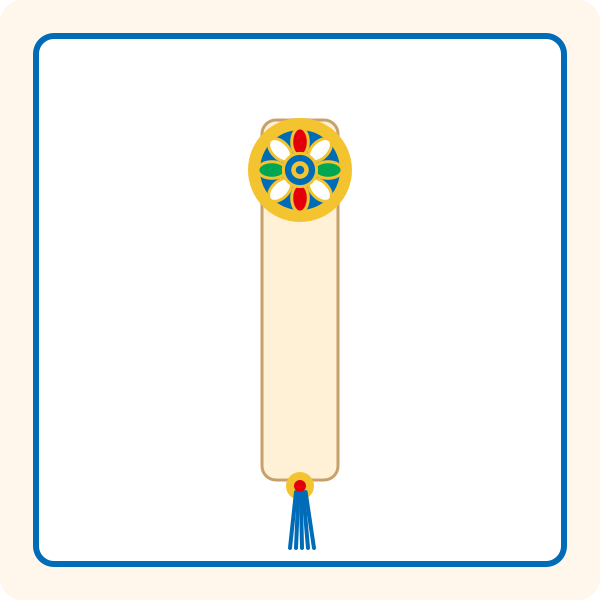

把图案的色块边界做成金属「掐丝」，再用珐琅釉料填色、烧制，得到高级感的国风饰品与摆件——像素的活泼，加上珐琅的贵气。

掐丝珐琅模块的示例作品（矢量插画）：金属掐丝勾勒轮廓，珐琅釉色填心。


在设计器里排好像素图，色块边界就是掐丝的位置。
沿轮廓弯出细金线，立起图案的筋骨。
把釉料填进丝与丝之间，颜色饱满不透底。
入窑烧结、打磨抛光，得到温润的高级质感。
福字、脸谱、千里江山、团花……在拼豆星球设计器里画出你的国风图案，导出图纸作为掐丝底稿，再交给珐琅工艺做成实物。传统，也能很潮。